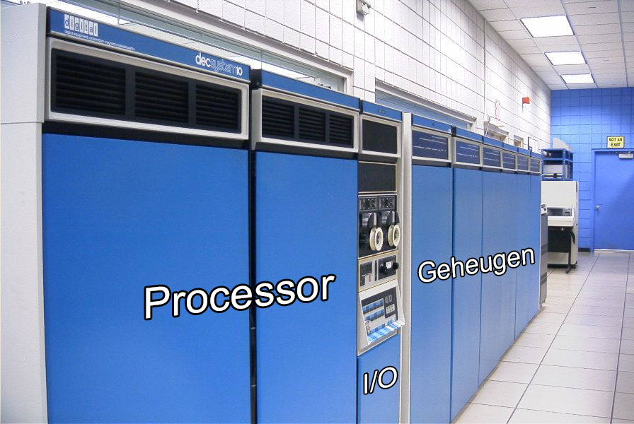
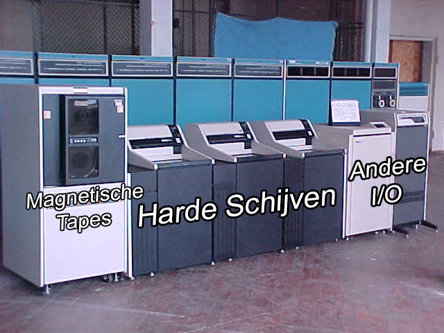
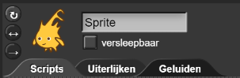

Het Digitale Domein: Componenten
Op deze pagina, ga je de delen (componenten) van de
computerhardware verkennen.
Zo lang als mensen al les geven over computers zeggen ze al "Een computer bestaat uit een processor, geheugen
en invoer/uitvoerapparaten."
In de vroege dagen van computers was het makkelijk om te zien welke rekken met spullen ieder van die drie
componenten bevatten:
 
Dit zijn foto's van een krachtige computer uit de jaren zeventig. Elk van de grote rekken vol met circuits
is ongeveer zo groot als een koelkast. Tegenwoordig past een veel krachtigere computer - meer snelheid, meer
geheugen - in een mobiele telefoon.
Omdat de processors en het geheugen van vandaag zo klein zijn, zien we vooral de invoer / uitvoer
(I/O) -apparaten, zoals toetsenbord, muis en schermen. Invoer -apparaten zijn het
toetsenbord, de muis en de microfoon. Uitvoer -apparaten zijn de printer, speakers en (voor
laptops of desktopcomputers) het scherm. Op telefoons en tablets worden touchscreens gebruikt voor
zowel invoer als uitvoer. Disk drives (voor externe harde schijven en USB-sticks), optical drives (voor
cd's en dvd's) en de internetinterface worden ook voor beide gebruikt.
- Beweeg de muis over de cijfers om meer te weten te komen over elk van de computeronderdelen. (Of
download deze
Computer Components PDF (Engels).)
Image credit: Wikipedia user HereToHelp

Waarom wordt het moederbord
genoemd?
In een desktopcomputer zijn er ook andere borden - de
Ethernet-poort, "seriële" poorten voor het toetsenbord en de muis en andere uitbreidingskaarten; en
alle andere onderdelen worden op het moederbord aangesloten . Op laptops is er geen
ruimte voor veel andere boards en er is geen ruimte voor onderdelen rechtsreeks op het
moederbord, maar we gebruiken nog steeds dezelfde naam.
-
 Stel je voor dat je een nieuwe computer koopt. Laat elke persoon in een groep van vier een
van deze redenen kiezen:
Stel je voor dat je een nieuwe computer koopt. Laat elke persoon in een groep van vier een
van deze redenen kiezen:
- Hoofdzakelijk voor het lezen van e-mail en het surfen op webpagina's (maar niet
om veel films te kijken).
- Hoofdzakelijk voor het spelen van online videogames.
- Hoofdzakelijk voor het opslaan van foto's en muziek.
- Hoofdzakelijk voor het streamen van films online.
Stel dat je elk de goedkoopste computer wilt die het beste voor jou werkt. Onderzoek
welke functies van de computer het belangrijkst zijn voor jouw doel, kies een computer en
vergelijk aantekeningen met de rest van de groep. Welke computer is het duurst? Minst
duur? Heb je gekozen voor een laptop of een desktop, en waarom?
- Maak een quizspel om de kennis van een speler over computerhardware te testen.
Sprites zijn ingesteld op niet versleepbaar zodat de getallen niet
bewegen.


Dit project bevat een achtergrond, uiterlijken voor de genummerde componenten en een lijst van
componenten zodat je ze niet hoeft te typen.
Dingen waaraan je zou kunnen denken bij het ontwerpen van je programma:
- Hoe zal de computer vragen stellen? Zal het programma willekeurig kiezen uit de
componentenlijst?
- Hoe zal de speler antwoorden? Zullen ze op een cijfer in het werkgebied klikken om te
antwoorden?
- Hoe behandelt het programma fouten van spelers? Kunnen ze het meteen opnieuw proberen?
Zullen ze doorgaan en later herhalen? Of krijgen ze geen verdere kans?
- Beslis of je de score bijhoudt en, zo ja, hoe je het doet.
- Beslis of je bijhoudt wat er is gevraagd zodat de componenten niet herhaald worden en,
zo ja, hoe het te doen.
- Beslis wanneer je het spel wilt beëindigen en wat je dan moet doen.

- Kies een of meer van de volgende vragen om te onderzoeken:
- Hoe weet een touchscreen waar je vinger drukt?
- Wat is een register? Waarom hebben computers registers?
- Wat is een cache? Waarom hebben computers cache?
- Vroege smartphones hadden fysieke toetsenborden. Tegenwoordig hebben ze allemaal 'virtuele
toetsenborden'. Wat zijn de voor- en nadelen?